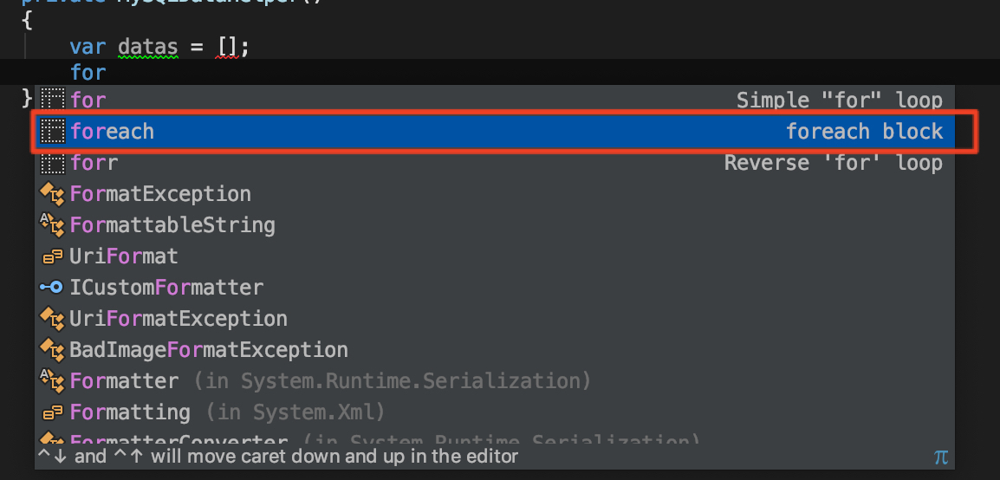
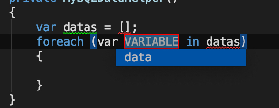
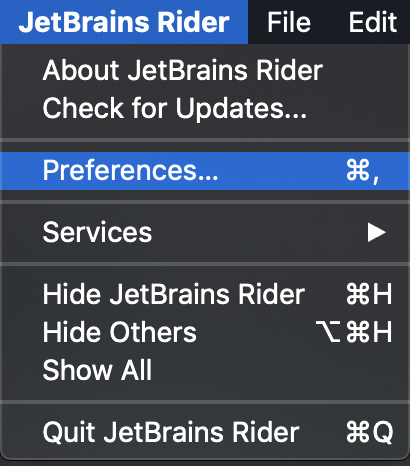
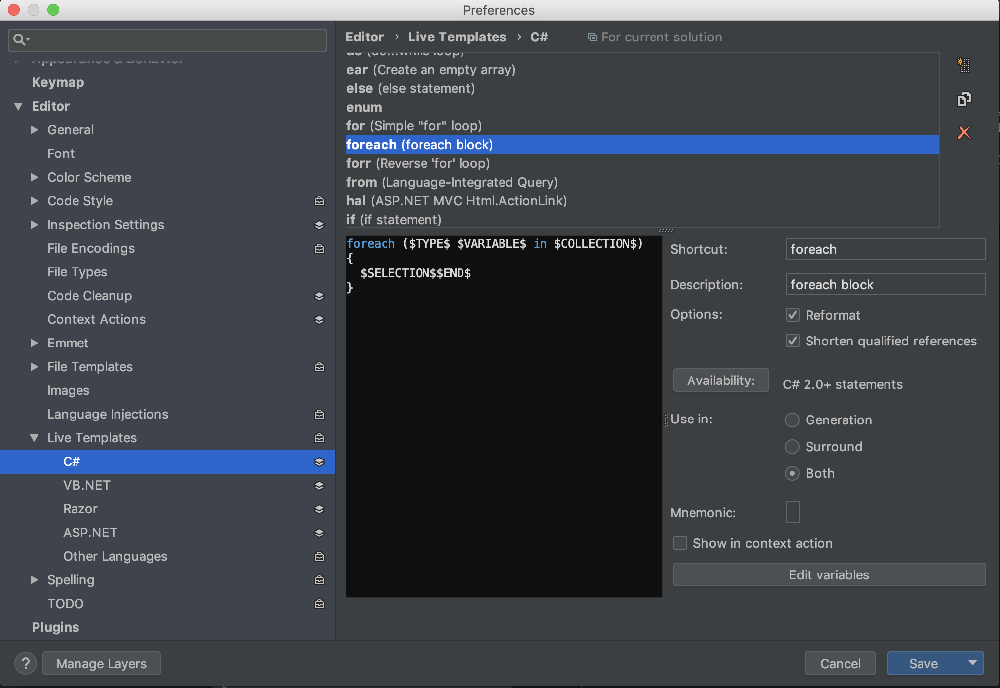
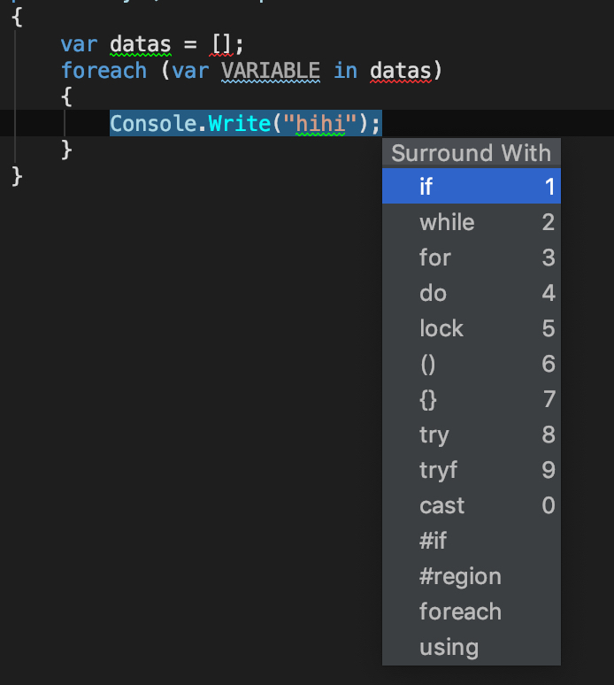
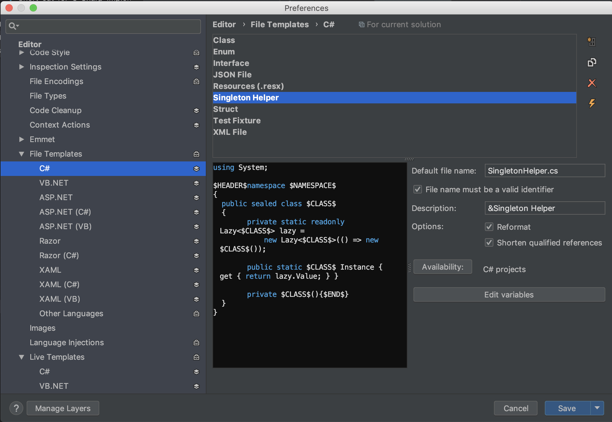
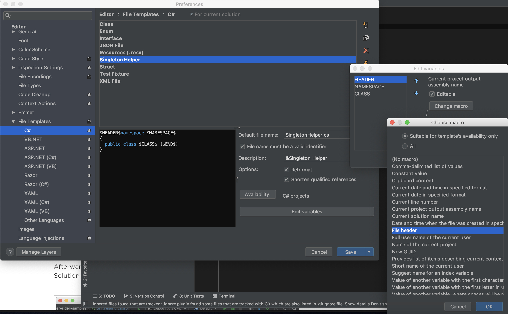
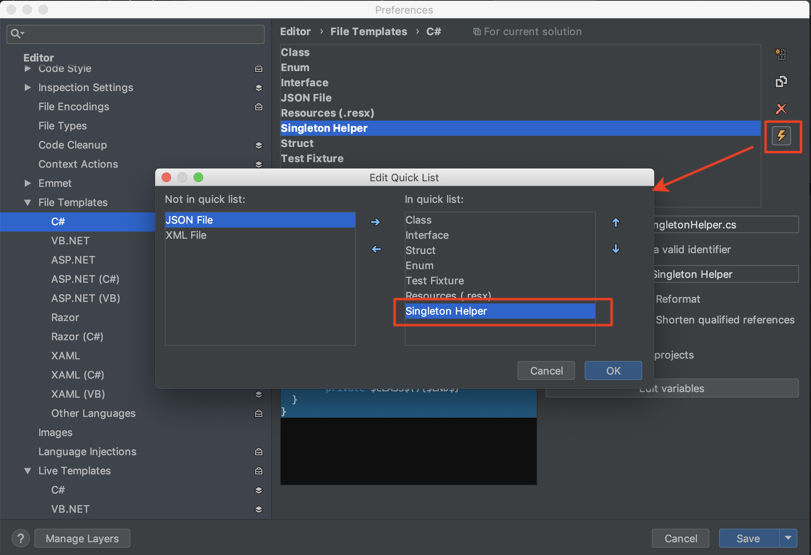
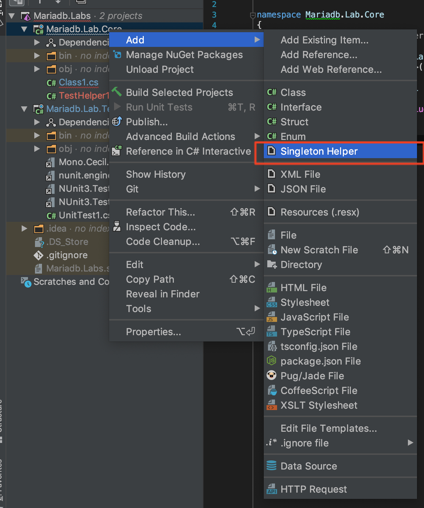

紀錄 Rider 如何透過 Live templates 與 File templates 增加開發效率
Ｒider 在 2018.2 版本推出了兩個新功能 Live templates 與 File templates 的流程改進，透過這兩個功能我們可以
處理重複內容、建立程式碼樣板和各項語言撰寫前的宣告或是呈現的預設樣式，原文介紹：Live templates and file templates in Rider 2018.2，這邊就簡單分享一下如何使用這兩個功能．
Live Templates
這個功能可以很快速的幫我們透過以建立的程式碼樣板帶入當前程式區塊，類似code snipet 的效果，但更為強大的是可以動態的決定一些帶入參數與語言結構．
這邊我們很快的輸入在建立一份 C# 函示如下:
1 | public void DoTest() |
當我們建立以上內容後可以透過在下一行開始輸入 foreach 等已建立的預設 live templates 關鍵字建立樣板：

接著可以按下 tab 或是 enter 引入這個樣板.
而當樣板被引入後，即可輸入前面宣告的變數 datas． 這邊只要輸入前幾個想選擇的變數前面的名稱，當選項已經反白鎖定了就可以按下 tab 自動帶入並移動到前方再度詢問是否要變更設定, 此時按下 tab 則會產生預設的迴圈內變數，直接按下 tab 就可以完成整個迴圈設定：

透過以上方法我們能更快速的實作常用的程式碼區塊．
而預設建立的 live templates 樣板可以從 Preferences > Editor | Live Templates 這邊看到：


而從設定中我們也可以看到有一個選項是 Generate, Surround or Both, 上面的範例就是一個 Generate 的使用方式，而 Surround 的用法則是在你原本想要再迴圈內運行的區段按下快捷鍵 Code | Surround With… (Windows 為 Ctrl+E,U 而 macOS 為 ⌘ ⌥ T))
這邊就可以這邊就可以如下叫出快捷並選擇要包裹的類型為哪一個樣板：

整套原文的做法可以參考這邊示範:

File Templates
而不同於 live templates 是在已經建立的程式檔案中方便插入常見的程式碼樣式或區塊，File Templates 更加用於建立一份已知的預設檔案樣板，這邊已先前介紹過的 Singleton Pattern Implementation in C# 為例子, 建立一個 Singleton 的檔案大概如下：
1 | using System; |
從上面的檔案我們就可以建立一個 Singleton Helper 的樣版，以便之後快速建立向同框架或程式碼結構的其他檔案．
首先到 Preferences > Editor | File Templates ，我們就可以建立一個新的樣版並給她以下設定：

其中畫面類似程式碼區塊的就是我們剛剛擷取的樣版：
using System;
$HEADER$namespace $NAMESPACE$
{
public sealed class $CLASS$
{
private static readonly Lazy<$CLASS$> lazy =
new Lazy<$CLASS$>(() => new $CLASS$());
public static $CLASS$ Instance { get { return lazy.Value; } }
private $CLASS$(){$END$}
}
}
將一些需要帶入的專案變數用特殊的寫法包起來並透額外透過下面的步驟逐一設定(這邊可以參考已經建立好的預設樣板各變數是取用什麼對應)：

到這邊確定完後記得要點選右邊的閃電標記並將他移入當前使用才可生效：

最後只要在剛剛樣板可以生效的轉案類型，在新增檔案時可以從 context 看到有多一個剛剛建立的樣板選項：

接下來只要輸入你想要的檔案名稱，他就會以該名稱建立一個同名的 Singleton 模式的類別供使用．